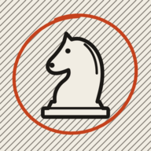

ZwischenzugZwischenzug – Privacy
Updated: 10 November 2026 · applies to the iPhone app “Zwischenzug – Chess” (shown as “Zwischenzug” on the home screen), version 0.1 and later, including TestFlight test versions.
Controller: Bernhard Slatinsek, Olga Rudel Zeynek Gasse 16, 8054 Graz, Austria · privacy@nbsystems.dev. “nbsystems” is a project/brand name of the controller, not a separate organisation.
In short: Zwischenzug has no account, no server, no ads and no analytics or tracking. The app makes no internet connection; the computer opponent runs on your iPhone. Your games stay on your iPhone; the publisher receives none of it.
What the app stores on your iPhone
- The current game: its moves, the opponent and level, clock settings and remaining times if you play with a clock, and board preferences (orientation, piece set).
- Your choices in the “New game” sheet, so they are preset next time.
- The game library, including titles, moves and local analysis results, and imported PGN games. PGN headers may contain player names, place and date. These remain local like the other game data.
- If a save is damaged, a local recovery copy is preserved before starting a new game. The app does not upload this file to the publisher.
This is kept in the app's private storage. If you use iCloud Backup or computer backups, iOS includes it according to your Apple settings; the publisher has no access to it. Deleting the app removes it from the iPhone.
Sharing a game
You can export a game as a score sheet (PDF), board image (PNG) or PGN. Titles and imported PGN headers may be included in the export; check the file before sharing. The file is created on your iPhone and handed to the iOS share sheet only when you choose to; where it goes then (messages, mail, files) is your decision and subject to that app's terms. The app sends nothing by itself.
Help and privacy in your browser
Choosing “Options → Help and contact” or “Privacy policy” opens the selected website through iOS. Its host receives connection data; no games are passed as URL parameters.
Permissions
None. The app does not ask for location, photos, contacts, camera, microphone or notifications. Haptic feedback needs no permission.
App Store and TestFlight
Apple handles downloads and updates under its own terms. If you use a test version through TestFlight, Apple provides the publisher with information under the TestFlight terms, such as whether and which version you installed, crash reports, feedback and screenshots you choose to send, and, for email invitations, your name and email address. It is used only to improve the app and is managed in App Store Connect; you can leave the test at any time in the TestFlight app.
Email to us
If you write to support@nbsystems.dev or privacy@nbsystems.dev, your message and address are processed in the existing mailbox (Purelymail) to answer you. The publisher deletes such messages no later than six months after the matter is closed. For requests about your rights, a brief record without message content (date received, type of request, outcome) is kept for three years.
This website is served by GitHub Pages; GitHub receives connection data such as your IP address. It uses no cookies and no analytics scripts.
Children
The app is suitable for all ages and collects data from no one.
Your rights
Under the conditions of the GDPR you can request access, rectification, erasure, restriction and data portability and object to processing. Contact: privacy@nbsystems.dev. You can complain to a supervisory authority, in particular the Austrian Data Protection Authority, Barichgasse 40–42, 1030 Vienna, Austria, dsb@dsb.gv.at.
Changes
If the app changes so that this statement is no longer accurate, it will be updated beforehand and the date above changed.